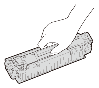
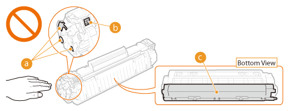

Consumables
|
|
|
Do not dispose of used toner cartridges in open flames. Also, do not store toner cartridges or paper in a location exposed to open flames. This may cause the toner or paper to ignite, and result in burns or fire.
If you accidentally spill or scatter toner, carefully sweep it up or wipe it up with a damp cloth, and avoid inhaling any toner dust. Do not use a vacuum cleaner to clean up loose toner unless it is equipped with safety measures to prevent dust explosions. Doing so may cause damage to the vacuum cleaner or result in a dust explosion due to static discharge.
If you are using a cardiac pacemakerToner cartridges generate a low level magnetic flux. If you use a cardiac pacemaker and feel abnormalities, please move away from toner cartridges and consult your physician immediately.
|
 |
|
Use caution not to inhale any toner. If you should inhale toner, consult a physician immediately.
Use caution so that toner does not get into your eyes or mouth. If toner should get into your eyes or mouth, immediately wash it away with cold water and consult a physician.
Use caution so that toner does not come into contact with your skin. If it should, wash it off with soap and cold water. If your skin is irritated, consult a physician immediately.
Keep toner cartridges and other consumables out of the reach of small children. If toner is ingested, consult a physician or poison control center immediately.
Do not disassemble or modify the toner cartridge. Doing so may cause the toner to scatter.
Remove the sealing tape of the toner cartridge completely without using excessive force. Doing otherwise may cause the toner to scatter.
|
 |
Handling the toner cartridgeBe sure to use the holder to hold the toner cartridge.
 Do not touch the electrical contacts (
 ) or toner cartridge memory ( ) or toner cartridge memory ( ). Do not open the drum protection shutter ( ). Do not open the drum protection shutter ( ). Doing so risks scratching the drum surface or exposing it to light. ). Doing so risks scratching the drum surface or exposing it to light.  The toner cartridge is a magnetic product. Keep it away from floppy disks, disk drives, and other devices that can be affected by magnetism. Failure to do so may result in data loss.
Storing toner cartridgesTo ensure safe and satisfactory performance, store toner cartridges under the following environmental conditions.
Storage temperature range: 32 to 95 °F (0 to 35 °C) Storage humidity range: 35 to 85% RH (relative humidity), no condensation* Store without opening until the toner cartridge is to be used.
When removing the toner cartridge from this machine for storage, place the removed toner cartridge into the original protective bag or wrap it with a thick cloth.
When storing the toner cartridge, do not store it upright or upside down. The toner may solidify and not return to its original condition even if it is shaken.
* Even within the storable humidity range, water droplets (condensation) may develop inside the toner cartridge if there is a difference of temperature inside and outside the toner cartridge. Condensation inside the toner cartridge will adversely affect print quality.
Do not store the toner cartridge in the following locationsLocations exposed to open flames
Locations exposed to direct sunlight or bright light for five minutes or more
Locations exposed to excessive salty air
Locations where there are corrosive gases (i.e. aerosol sprays and ammonia)
Locations subject to high temperature and high humidity
Locations subject to dramatic changes in temperature and humidity where condensation may easily occur
Locations with a large amount of dust
Locations within the reach of children
Be careful of counterfeit toner cartridgesPlease be aware that there are counterfeit Canon toner cartridges in the marketplace. Use of counterfeit toner cartridge may result in poor print quality or machine performance. Canon is not responsible for any malfunction, accident or damage caused by the use of counterfeit toner cartridge.
For more information, see http://www.canon.com/counterfeit.
Availability of repair parts and toner cartridgesRepair parts and toner cartridges for this machine will be available for at least seven (7) years after production of this machine model has been discontinued.
Toner cartridge packing materialsSave the protective bag for the toner cartridge. It is required when transporting this machine.
Packing materials may be changed in form or placement, or may be added or removed without notice.
Dispose of removed sealing tape according to local regulations.
Disposal of used toner cartridgesPlace the toner cartridge into its protective bag to prevent the toner from scattering, and then dispose of the toner cartridge according to local regulations.
|